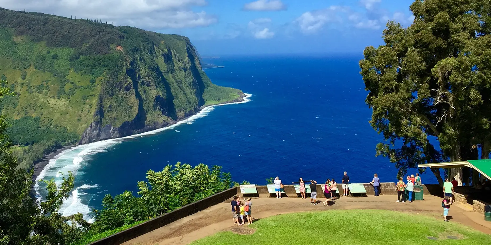

<!DOCTYPE html>
<html lang="en">
<head>
    <meta charset="UTF-8">
    <meta name="viewport" content="width=device-width, initial-scale=1.0">
    <title>Photo Tour: A brief description of the project</title>
    <link rel="stylesheet" href="style.css">
</html>
</head>

<body>
<main>
    <h1> Waipio Valley</h1>
    <h2> A beautiful spot known for its view.</h2>
    <p> Waipio Valley is a breathtakingly beautiful valley located on the northeastern coast of the Big Island. It is known for its lush greenery, towering cliffs, and stunning waterfalls. Visitors can hike down to the valley floor, explore the black sand beach, or simply take in the incredible views from the lookout point.</p>
    
    <p> One of the most popular attractions in Waipio Valley is the Hiilawe Falls, which is one of the tallest waterfalls in Hawaii. Visitors can hike to the base of the falls and take a refreshing dip in the pool below.</p>
    
</main>
</body>

<footer>

    <p>Click here to see the other destinations:</p>

  <li><a href = "PhotoTourProject.html"> Home Page</a></li>
    <li><a href = "Hilo.html"> Hilo</a></li>
    <li><a href = "Kona.html"> Kona</a></li>
    <li><a href = "Mauna Kea.html"> Mauna Kea</a></li>
    <li><a href = "Volcano-National-Park.html">Volcano National park </a></li>
    <li><a href = "Waipio-Valley.html" class="active"> Waipio</a></li>

    <p>Copyright&copy; 1875 by Amlek M.</p>
</footer>
